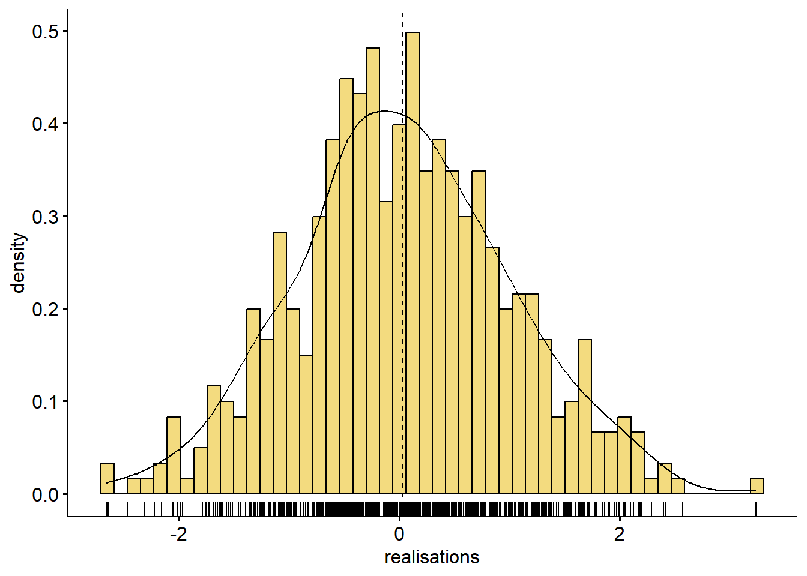

Chapitre 4 Variables aléatoires à densité
Le chapitre précédent trait des variables aléatoires réelles discrètes, i.e. les variables aléatoires \(X:(\Omega, \mathcal{P}(\Omega), \mathbb{P})\longrightarrow\mathbb{R}\) (ou \(\mathbb{R}^d\) pour un vecteur aléatoire discret) de support \(X(\Omega)\subset\mathbb{R}\) au plus dénombrable.
On va s’intéresser dans ce chapitre aux variables aléatoires continues, et plus spécifiquement aux variables aléatoires continues à densité. Mais on commence d’abord par une définition plus générale qui englobe tous ces cas.
4.1 Variables aléatoires : cas général
Dans tout ce chapitre, \((\Omega, \mathcal{A}, \mathbb{P})\) est un espace probabilisé. Pour rappel, \(\Omega\) est l’univers de l’expérience aléatoire modélisée, \(\mathcal{A}\) est une tribu, et \(\mathbb{P}\) est une mesure de probabilité sur \((\Omega, \mathcal{A})\) (appelé espace probabilisable). Dans le cas discret, on supposait implicitment \(\mathcal{A}=\mathcal{P}(\Omega)\). Dans le cas général, \(\mathcal{P}(\Omega)\) peut être un ensemble extrêment vaste et on préfère restreindre l’espace des observables à un espace plus petit. Mais une fois ceci dit, sauf mention explicite du contraire, nous ne parlerons plus de tribu, et l’espace probabilisé \((\Omega, \mathcal{A}, \mathbb{P})\) restera dans ce cours un objet purement formel.
4.1.1 Définition générale
On appelle variable aléatoire réelle sur l’espace probabilisé \((\Omega, \mathcal{A}, \mathbb{P})\) toute application \(X:\Omega\longrightarrow\mathbb{R}\) telle que :
\[\text{pour tout intervalle } I\subset\mathbb{R}, \, X^{-1}(I)\in\mathcal{A}\]
Ceci revient à dire que pour tout intervalle \(I\subset\mathbb{R}\), \(X^{-1}(I)\) est un événement (i.e. un observable). Cet événement sera souvent noté \((X\in I)\) :
\[\forall\omega\in\Omega, \, \omega\in (X\in I) \text{ ssi } X(\omega)\in I\] De plus, pour tout \(\omega\in\Omega\), \(X(\omega)\) sera appelé une réalisation de \(X\).
4.1.2 Loi d’une variable aléatoire
On a vu que la loi d’une variable aléatoire discrète \(X\) sur \((\Omega, \mathcal{P}(\Omega), \mathbb{P})\) était définie par la donnée de son support \(X(\Omega)\) et de toutes les probabilités \(\mathbb{P}(X=x)\) pour \(x\) dans le support.
La définition suivante est un peu plus générale, puisqu’elle englobe le cas discret sans s’y limiter :
Théorème (Loi d’une variable aléatoire : cas général). Soit \(X\) une variable aléatoire (réelle) définie sur un espace probabilisé \((\Omega,\, \mathcal{A},\, \mathbb{P})\).
La loi de \(X\) est complétement définie par :
la donnée de son support \(F=X(\Omega)\) ;
la donnée, pour tout \(x\) dans \(X(\Omega)\), de la probabilité \(\mathbb{P}(X\leq x)\).
Cette loi est unique à des événements de probabilité nulle près.
Par ailleurs, l’application \(F_X\) (ou plus simplement \(F\)) définie sur \(\mathbb{R}\) par
\[F(x)=\mathbb{P}(X\leq x)\]
est appelée fonction de répartition de \(F\).
Remarque. La loi d’une variable discrète pourrait tout à fait être définie comme la donnée de \(X(\Omega)\) et des probabilités \(\mathbb{P}(X\leq x)\) (plutôt que \(\mathbb{P}(X=x)\)) : c’est le résulat selon lequel la loi d’une variable aléatoire discrète est complètement définie par sa fonction de répartition.
Les propriétés de la fonction de répartition dans le cas général sont les mêmes que celles vues dans le cas discret :
Soit \(F\) la fonction de répartition d’une variable aléatoire réelle (discrète ou non). Alors :
i. \(F\) est une fonction croissante sur \(\mathbb{R}\) ;
ii. \(F\) est continue à droite ;
iii. \(\lim\limits_{x\to -\infty}F(x)=0\) ;
iv. \(\lim\limits_{x\to +\infty}F(x)=1\) ;
v. Pour tout couple \((a,b)\) de réels :
\[\mathbb{P}(X\in ]a\,;\,b])=F(b)-F(a)\]
Démonstration. La même que dans le cas discret !
\(\square\)
La fonction de répartition d’une variable aléatoire quelconque est donc toujours continue à droite. Elle peut cependant ne pas être continue : les variables aléatoires réelles discrètes sont exactement dans ce cas (voir chapitre précédent).
Ce chapitre va s’intéresser au cas particulier où \(F\) est continue, et même plus particulièrement où \(F\) est continue et à densité.
4.2 Variables aléatoires réelles continues
Une variable aléatoire réelle \(X:(\Omega, \mathcal{A}, \mathbb{P}):\longrightarrow\mathbb{R}\) est dite continue lorsque sa fonction de répartition est continue.
Une conséquence immédiate de cette définition est la suivante :
Théorème. Si \(X:(\Omega, \mathcal{A}, \mathbb{P}):\longrightarrow\mathbb{R}\) est une variable aléatoire réelle continue, alors
\[\forall x\in X(\Omega),\,\mathbb{P}(X=x)=0\]
En particulier, pour tout couple \((a,b)\) de réels tels que \(a\leq b\), on a
\[\begin{align} \mathbb{P}\left(X\in \left[a\,;\,b\right]\right) &= \mathbb{P}\left(X\in \left[a\,;\,b\right[\right) \\ &= \mathbb{P}\left(X\in \left]a\,;\,b\right]\right) \\ &= \mathbb{P}\left(X\in \left]a\,;\,b\right[\right) \\ &= F(b)-F(a) \end{align}\]
Notation. Puisque pour une loi continue, le sens des crochets d’un intervalle n’a pas d’importance, on utilisera la notation unifiée \((a;b)\) pour désigner n’importe quel intervalle construit à partir des bornes \(a\) et \(b\) (éventuellement infinies).
Démonstration. Voir la démonstration du théorème sur les discontinuités d’une fonction de répartition et de la remarque qui la suit (chapitre précédent).
\(\square\)
4.3 Variables aléatoires réelles à densité
4.3.1 Définition
Tout le reste de ce chapitre va se concentrer sur une sous-famille de la famille des lois continues : celle des lois à densité (dites aussi lois absolument continues).
L’idée est la suivante. On suppose qu’on tire un grand nombre \(n\) de réalisations \(x_1,\dots, x_n\) d’une variable aléatoire \(X\) continue. On représente ces points sur une droite graduée :
La droite se découpe alors en des zones de différents niveaux de densité : la distribution des points est inégalitaire. Si \(x\) est un réel, et \(\Delta x\) un nombre réel positif très proche de \(0\), on note \(n_{x,x+\Delta x}\) le nombre de réalisations comprises dans l’intervalle \([x\,,\,x+\Delta x[\). La probabilité qu’un nombre tiré sous la loi de \(X\) soit compris dans cet intervalle peut alors être approchée par la proportion de nombres de la série \(x_1,\dots, x_n\) qui sont effectivement dans cet intervalle :
\[\mathbb{P}\left(X\in[x\,;\, x+\Delta x[\right)\approx\frac{n_{x,x+\Delta x}}{n}\] Par ailleurs, sous réserve d’une certaine régularité de cette distribution, on peut s’attendre à ce que pour un \(x\) donné, le nombre de réalisations dans \([x\,;\,x+\Delta x[\) soit proportionnel à l’amplitude \(\Delta x\) de cet intervalle :
\[n_{x,x+\Delta x}\approx n\,f(x)\,\Delta x\] avec \(n\,f(x)\) le coefficient de proportionnalité.
Donc, toujours sous réserve de régularité de la distribution de \(X\) :
\[\mathbb{P}\left(X\in [x\,;\,x+\Delta x[\right)\approx f(x)\,\Delta x\]
Dans ces conditions, on a
\[\frac{\mathbb{P}\left(X\in [x\,;\,x+\Delta x[\right)}{\Delta x}\approx f(x)\] et \(f(x)\) est donc le ratio entre la probabilité que \(X\) appartienne à un intervalle local d’extrêmité \(x\) et la longueur de cet intervalle : \(f(x)\) s’interpréte donc comme une densité de probabilité.
Quelles sont les conditions d’existence de \(f(x)\) ? On a dit de façon intuitive que la loi de \(X\) devait présenter une certaine forme de régularité. On peut donner un sens rigoureux à cette idée en se rappelant que
\[\mathbb{P}\left(X\in [x\,;\,x+\Delta x[\right)=F(x+\Delta x)-F(x)\] où \(F\) est la fonction de répartition de \(X\). On veut donc trouver une condition à l’existence d’une fonction \(f\) telle que pour tout réel \(x\) on ait, pour \(\Delta x\) très proche de \(0\), l’approximation :
\[\frac{F(x+\Delta x)-F(x)}{\Delta x}\approx f(x)\] Le cours d’analyse dit que cette condition est celle de la dérivabilité de \(F\) en tout réel \(x\). Dans la définition d’une variable aléatoire absolument continue (ou à densité), on n’exige pas exactement une condition de dérivabilité de \(f\) sur \(\mathbb{R}\), mais quelque chose d’assez proche :
Soit \(X:(\Omega, \mathcal{A}, \mathbb{P})\longrightarrow\mathbb{R}\) une variable aléatoire réelle continue. On dit qu’elle est absolument continue ou à densité si sa fonction de répartition est de classe \(\mathcal{C}^1\) sur \(\mathbb{R}\) (ou éventuellement sur \(\mathbb{R}\) privé d’un ensemble fini de points).
Remarques. i. Une variable aléatoire peut donc être :
- discrète ;
- continue, et dans ce cas elle peut être :
- à densité ;
- continue sans être à densité ;
- ni discrète ni continue (exemple un peu plus loin).
ii. Pour une variable aléatoire à densité, de densité \(f\), on a donc
\[\lim\limits_{\Delta x\to 0}\frac{\mathbb{P}(X\in[x\,;\,x+\Delta x[)}{\Delta x}=f(x)\] Cette limite prend parfois la forme suivante
\[\frac{\mathbb{P}(X\in [x\,;\,x+dx[)}{dx}=f(x)\] où \(dx\) est conçu comme un élément infinitésimal, autrement dit un \(\Delta x\) qui peut être rendu aussi petit que l’on veut. On s’autorise alors à faire un produit en croix et écrire cela sous la forme
\[\mathbb{P}(X\in [x\,;\,x+dx[)=f(x)\,dx\] Cette écriture peut se comprendre de la manière suivante : le produit de la densité en \(x\) par un élément infinitésimal \(dx\) est égal à la probabilité que \(X\) appartienne à l’intervalle infinitésimal de borne inférieure \(x\) et de longueur \(dx\).
Le programme du concours d’administrateur Insee se concentre surtout sur le cas discret et le cas à densité, mais on peut dans certains sujets rencontrer d’autres types de lois. Dans ce cas, aucune connaissance n’est supposée requise pour traiter l’exercice ou le problème.
4.3.2 Fonction de densité
On peut maintenant définir la notion de densité d’une variable aléatoire à densité :
Soit \(X:(\Omega, \mathcal{A}, \mathbb{P})\longrightarrow\mathbb{R}\) une variable aléatoire réelle suivant une loi à densité. Sa dérivée \(F'\) est donc définie et continue partout sauf éventuellement en un nombre fini de points. On appelle alors fonction de densité (ou densité, ou densité de probabilité) de \(X\) toute fonction \(f:\mathbb{R}\longrightarrow\mathbb{R}\) :
- positive sur \(\mathbb{R}\) ;
- égale à \(F'\) sauf éventuellement en un nombre fini de points ;
- d’intégrale sur \(\mathbb{R}\) convergente et égale à \(1\) :
\[\int_{-\infty}^{+\infty}f(x)\,dx=1\]
Remarques. i. La densité d’une loi de probabilité s’interprète bien comme la densité d’une probabilité : elle nous indique à quel point un réel tiré sous cette loi a une probabilité par unité de longueur élevée de se trouver dans une zone infinitésimale.
ii. Pour une loi à densité, il n’y a pas unicité de la fonction de densité. Dès qu’on a trouvé une densité \(f\), il suffit de choisir un réel \(x_0\) quelconque, un réel \(a\) quelconque différent de \(f(x_0)\), et de poser \(g(x)=f(x)\) pour tout réel \(x\) différent de \(x_0\) et \(g(x_0)=a\). Comme le nombre de choix possibles pour \(a\) est infini, celui pour \(g\) l’est aussi.
iii. Ceci étant dit, deux densités d’une même variable à densité sont égales à un ensemble fini près. Autrement dit, on a le résultat suivant :
Théorème. La densité caractérise la loi d’une variable à densité, à un ensemble de mesure de probabilité nulle près.
Exemple. On dispose d’un échantillon de \(500\) points tirés sous une certaine loi à densité (en fait une loi normale standard). Sur le bas du graphique, chaque petit segment vertical noir représente l’une des \(500\) réalisations obtenues. Certaines zones sont denses et sont donc associées à des parties hautes de l’histogramme et de la courbe de densité. D’autres sont moins peuplées et correspondent à des niveaux plus bas.
library(ggpubr)
set.seed(123)
data <- data.frame(realisations = rnorm(n = 500, mean = 0, sd = 1))
gghistogram(data, x = "realisations", y = "..density..",
add = "mean", rug = TRUE,
fill = "#E7B800", bins = 50,
add_density = TRUE)
4.3.3 Calcul de \(\mathbb{P}(X\in I)\)
Pour une loi discrète, on a la formule
\[\mathbb{P}(X\in I)=\sum\limits_{x\in I}\mathbb{P}(X=x)\] Pour une loi à densité, on a une formule tout à fait analogue. Il suffit de faire les changements suivants :
\[\begin{align} \mathbb{P}(X=x) & \leftrightarrow f(x)\,dx \\ \sum & \leftrightarrow \int \end{align}\]
En effet :
Théorème (calcul de \(\mathbb{P}(X\in I)\)). Soit \(X:(\Omega, \mathcal{A},\mathbb{P})\longrightarrow\mathbb{R}\) une variable aléatoire réelle à densité. On note \(f\) sa densité. Alors, pour tout intervalle \(I\), l’intégrale \(\int_I f(x)\,dx\) est convergente, et
\[\mathbb{P}(X\in I)=\int_I f(x)\,dx\] En particulier, pour tout réel \(x\) :
\[F(x)=\mathbb{P}(X\leq x)=\int_{-\infty}^x f(t)\,dt\]
Démonstration. \(F'(x)=f(x)\), sauf éventuellement pour un nombre fini de réels \(x\), donc si \(I=(a\,;\,b)\), on a
\[\begin{align} \mathbb{P}\left(X\in [a\,;\,b]\right)&=F(b)-F(a) \\ &=\int_a^b f(t)\,dt \end{align}\]
Soient \(x\) un réel et \((x_n)_n\) une suite de réels telle que \(\lim\limits_{n\to\infty}x_n=-\infty\). On a donc
\[F(x)-F(x_n)=\int_{x_n}^x f(t)\,dt\] i.e.
\[\mathbb{P}(X\leq x)=\int_{-\infty}^x f(t)\,dt\]
L’égalité est donc montrée pour tout intervalle du type \((a,b)\), avec \(a\) un réel ou \(-\infty\). Un raisonnement strictement analogue montre que l’égalité s’étend aux intervalles du type \((a,+\infty)\), avec \(a\) réel. Enfin, l’égalité est clairement vraie pour \(I=]-\infty\,;\,+\infty[\) puisque \(\int_{-\infty}^{+\infty}f(t)\,dt=1\).
D’où le résultat.
\(\square\)
4.3.4 Quantiles
La définition des quantiles est exactement la même que dans le cas discret. Dans le cas continu toutefois, la fonction de répartition est continue. Par ailleurs, elle est également croissante. Si cette croissance est stricte, alors \(F\) est inversible, et son inverse à gauche est égal à son inverse.
Soient \(X\) une variable aléatoire réelle continue et \(F\) sa fonction de répartition. On appelle fonction quantile de \(X\) la fonction inverse généralisée à gauche \(F^{-1}\) de \(F\). Si \(F\) est strictement continue, alors \(F^{-1}\) est l’inverse de \(F\) au sens classique.
De plus, pour tout réel \(p\) dans \([0,1]\), on appelle quantile d’ordre \(p\) le réel \(F^{-1}(p)\).
Exemples usuels de quantiles :
\(m_e=F^{-1}\left(\frac{1}{2}\right)\) est la médiane de \(X\) ;
\(Q_1=F^{-1}\left(\frac{1}{4}\right)\) et \(Q_3=F^{-1}\left(\frac{3}{4}\right)\) sont les quartiles de \(X\) ;
pour \(i=1,\dots,9\), les \(D_i=F^{-1}\left(\frac{i}{10}\right)\) sont les déciles de \(X\).
4.3.5 Exemples classiques de lois à densité
Exemple 1 : loi uniforme \(\mathcal{U}_{[a;b]}\) sur un segment \([a;b]\) (avec \(a<b\)). Sa densité est définie par
\[\begin{align} f(x)&=\frac{1}{b-a}.\mathbb{1}_{[a;b]}(x) \\ &=\left \{ \begin{array}{c @{} c} \frac{1}{b-a} & \text{ si } x\in[a;b] \\ 0 & \text{ sinon } \end{array} \right. \end{align}\]
Elle a donc pour support le segment \([a\,;\,b]\) et a pour particularité de ne privilégier aucune zone du segment par rapport à une autre. C’est en quelque sorte l’équivalent de la loi uniforme sur un ensemble fini pour le cas continu.
Sa fonction de répartion s’obtient par un calcul facile :
\[F(x)=\left \{ \begin{array}{c @{} c} 0 & \text{ si } x<a \\ \frac{x-a}{b-a} & \text{ si } x\in [a\,;b] \\ 1 & \text{ si } x>b \end{array} \right.\]
Exemple 2 : loi normale \(\mathcal{N}(\mu\,;\,\sigma^2)\). Ici, \(\mu\) et \(\sigma\) sont des réels. La densité de la loi normale \(\mathcal{N}(\mu\,;\,\sigma^2)\) est donnée, pour tout réel \(x\), par :
\[f(x)=\frac{1}{\sigma\,\sqrt{2\pi}}\,e^{-\frac{(x-\mu)^2}{2\sigma^2}}\] Il s’agit d’une fonction indéfiniment dérivable, dont la courbe représentative - appelée courbe en cloche ou gaussienne - est symétrique par rapport à l’axe vertical d’équation \(x=\mu\).
Sa fonction de répartition est la fonction \(F\) définie sur \(\mathbb{R}\) par
\[F(x)=\frac{1}{\sigma\,\sqrt{2\pi}}\int_{-\infty}^x e^{-\frac{(t-\mu)^2}{2\sigma^2}}\,dt\] Cette fonction n’est pas exprimable à partir des fonctions usuelles.
Dans le cas particulier où \((\mu\,,\,\sigma)=(0\,,\,1)\), on parle de loi normale standard, dont la densité est alors souvent notée \(\varphi\), et est définie pour tout réel \(x\) par :
\[\varphi(x)=\frac{1}{\sqrt{2\pi}}\,e^{-\frac{x^2}{2}}\] Il s’agit d’une fonction paire, indéfiniment dérivable, et telle que pour tout réel \(t\) :
\[\varphi^{'}(t)=-t\,\varphi(t)\]
Sa fonction de répartition est souvent notée \(\Phi\), elle est donnée pour tout réel \(x\) par
\[\Phi(x)=\frac{1}{\sqrt{2\pi}}\int_{-\infty}^x e^{-\frac{t^2}{2}}\,dt\] Elle n’est pas exprimable à partir des fonctions usuelles.
Exemple 3 : loi exponentielle \(\mathcal{E}(\lambda)\). Ici \(\lambda\) désigne un réel strictement positif. La loi exponentielle de paramètre \(\lambda\) a pour densité la fonction \(f\) définie pour tout réel \(x\) par
\[\begin{align} f(x)&=\lambda.e^{-\lambda x}.\mathbb{1}_{\mathbb{R}_+}(x) \\ &=\left \{ \begin{array}{c @{} c} \lambda.e^{-\lambda x} & \text{ si } x\geq 0 \\ 0 & \text{ sinon } \end{array} \right. \end{align}\]
Elle a donc pour support \(\mathbb{R}_+\).
Sa fonction de répartition s’obtient facilement :
\[\begin{align} F(x)&=(1-e^{-\lambda x}).\mathbb{1}_{\mathbb{R}_+}(x) \\ &=\left \{ \begin{array}{c @{} c} 0 & \text{ si } x<0 \\ 1-e^{-\lambda x} & \text{ si } x\geq 0 \\ \end{array} \right. \end{align}\]
Exemple 4 : loi gamma \(\gamma(p\,;\,\theta)\). Ici, \(p>0\) et \(\theta>0\). La densité de cette loi est donnée par
\[\begin{align} f(x)&=\frac{\theta^p}{\Gamma(p)}.e^{-\theta x}\,x^{p-1}\mathbb{1}_{\mathbb{R}_+}(x) \\ &=\left \{ \begin{array}{c @{} c} \frac{\theta^p}{\Gamma(p)}.e^{-\theta x}\,x^{p-1} & \text{ si } x\geq 0 \\ 0 & \text{ sinon } \end{array} \right. \end{align}\]
où la fonction \(\Gamma\) est définie, pour tout \(p>0\), par
\[\Gamma(p)=\int_0^{+\infty} e^{-x}x^{p-1}\,dx\]
La loi gamma a donc pour support \(\mathbb{R}_+\).
La fonction \(\Gamma\) admet de nombreuses propriétés. La plus commune est une égalité, qui s’obtient en effectuant une intégration par parties. Pour tout \(p>1\) :
\[\Gamma(p)=(p-1)\Gamma(p-1)\]
En particulier, si \(p\) est un entier strictement positif, on obtient :
\[\Gamma(p)=(p-1)!\]
Exemple 5 : loi log-normale \(Log-\mathcal{N}(\mu,\sigma^2)\). Une variable aléatoire positive \(X\) suit une loi log-normale de paramètres \(\mu\) et \(\sigma^2\) si la variable aléatoire \(\ln x\) suit une loi \(\mathcal{N}(\mu,\sigma^2)\). On en déduit la fonction de répartition d’une telle loi : si \(x>0\), alors
\[\begin{align} F(x)&=\mathbb{P}(X\leq x) \\ &=\mathbb{P}\left(\ln X\leq \ln x\right) \\ &=\mathbb{P}\left(\frac{\ln X -\mu}{\sigma}\leq\frac{\ln x-\mu}{\sigma}\right) \\ &=\Phi\left(\frac{\ln x-\mu}{\sigma}\right) \end{align}\]
avec \(\Phi\) la fonction de répartition de la loi normale standard \(\mathcal{N}(0\,;\,1)\). On en déduit la fonction de densité \(f\), définie pour \(x>0\) par :
\[\begin{align} f(x)&=F'(x) \\ &=\varphi\left(\frac{\ln x-\mu}{\sigma}\right)\,\frac{1}{\sigma x}\\ &=\frac{1}{\sigma x\sqrt{2\pi}}\,e^{-\frac{\ln x-\mu}{2\sigma^2}} \end{align}\]
où \(\varphi\) est la fonction de densité de la loi normale standard.
Exemple 6 : loi du Chi-deux \(\chi^2_n\). Pour \(n\geq 1\), la loi du Chi-deux (ou loi du khi-deux) à \(n\) degrés de liberté est la loi \(\gamma\left(\frac{n}{2},\frac{1}{2}\right)\). Sa densité est donc définie, pour \(x>0\), par
\[f(x)=\frac{1}{2^{\frac{n}{2}}\Gamma\left(\frac{n}{2}\right)}e^{-\frac{x}{2}}\,x^{\frac{n}{2}-1}\]
Si \(X_1,\dots,X_n\) sont des variables aléatoires mutuellement indépendantes, toutes de loi normale \(\mathcal{N}(0,1)\), alors la variable aléatoire
\[S_n=\sum\limits_{i=1}^n X_i^2\] suit la loi \(\chi^2(n)\). C’est même une autre façon de définir cette loi.
Exemple 7 : loi de Student. Soient \(X\) et \(U\) deux variables aléatoires indépendantes telles que
\[X\sim\mathcal{N}(0,1)\] \[U\sim\chi^2_n\] Alors la loi de Student à \(n\) degrés de liberté est la loi suivie par la variable aléatoire
\[\frac{X}{\sqrt{\frac{U}{n}}}\] Sa densité est définie, pour \(x\) réel, par
\[f(x)=\frac{1}{\sqrt{n\pi}}\frac{\Gamma\left(\frac{n+1}{2}\right)}{\Gamma\left(\frac{n}{2}\right)}\left(1+\frac{x^2}{n}\right)^{-\frac{n+1}{2}}\] où \(\Gamma\) est la fonction Gamma d’Euler.
Applications : test de Student, construction d’intervalles de confiance.
Exemple 8 : loi de Fisher \(F_{m,n}\). Soient \(m\) et \(n\) deux entiers tels que \(m\geq 1\) et \(n\geq 1\). Soient \(U\) et \(V\) deux variables aléatoires indépendantes telles que
\[U\sim\chi^2_m\] \[V\sim\chi^2_n\] Alors la loi de Fisher de paramètres \(m\) et \(n\) est la loi suivie par la variable aléatoire
\[\frac{\frac{U}{m}}{\frac{V}{n}}\] Autrement dit
\[F_{m,n}=\frac{\frac{\chi^2}{m}}{\frac{\chi^2}{n}}\] Sa densité est définie, pour tout réel \(x\), par :
\[f(x)=\frac{\Gamma\left(\frac{m+n}{2}\right)}{\Gamma\left(\frac{m}{2}\right)\Gamma\left(\frac{n}{2}\right)}\,n^{\frac{n}{2}}m^{\frac{m}{2}}\frac{x^{\frac{m}{2}-1}}{(mx+n)^{\frac{m+n}{2}}}\] Remarque. Dans le cadre du concours d’administrateur Insee, il est précisé dans la notice fixant les programmes et les modalités des épreuves que les définitions des lois log-normale, loi du Chi-Deux, loi de Student, loi de Fisher devront être connues sans que soit exigible aucun calcul à leur sujet (moments, densités..).
4.3.6 Moments d’une variable aléatoire
Comme pour les lois discrètes, l’espérance d’une variable aléatoire continue, si elle existe, est définie comme une moyenne pondérée des valeurs qu’elle peut prendre.
Dans le cas discret, on a
\[\mathbb{E}(X)=\sum\limits_{x\in X(\Omega)}\mathbb{P}(X=x)x\] Dans le cas d’une variable à densité, on remplace \(\mathbb{P}(X=x)\) (qui vaut \(0\)) par \(\mathbb{P}(X\in [x\,;\,x+dx]\), où \(dx\) est un élément infinitésimal). On a vu que
\[\mathbb{P}(X\in [x\,;\,x+dx])=f(x)\,dx\] et donc l’expression \(\mathbb{P}(X=x)x\) du cas discret devient, dans le cas à densité
\[\mathbb{P}(X\in [x\,;\,x+dx])\,x=xf(x)\,dx\] Comme on somme des éléments infinitésimaux, on remplace le symbole \(\Sigma\) du cas discret par une intégrale \(\int\), qui est une somme continue. On obtient donc la définition suivante :
Soit \(X:(\Omega,\mathcal{A},\mathbb{P})\longrightarrow\mathbb{R}\) une variable aléatoire à densité. On note \(f\) sa fonction de densité.
On dit alors que \(X\) admet une espérance (finie) lorsque l’intégrale
\[\int_{-\infty}^{+\infty}x\,f(x)\,dx\] est absolument convergente. Dans ce cas, l’espérance de \(X\) est égale à cette intégrale :
\[\mathbb{E}(X)=\int_{-\infty}^{+\infty}x\,f(x)\,dx\] Une variable \(X\) pour laquelle \(\mathbb{E}(X)=0\) sera dite centrée.
Remarque. En pratique, pour calculer l’espérance d’une variable aléatoire \(X\), on s’assure donc au préalable que l’intégrale ci-dessus est absolument convergente. Si le support de \(X\) est un segment et que \(f\) est continue, il n’y aura aucun problème de convergence puisque l’intégrale sur un segment d’une fonction continue sur ce segment est toujours absolument convergente. Dans les autres cas, au moins une borne pose problème, soit parce-que c’est une borne finie en laquelle la fonction n’est pas définie, soit parce-que c’est une borne infinie. Dans ce cas, on peut essayer de se ramener à une intégrale de référence puis utiliser un résultat du cours d’analyse (critère de Riemann, critère d’équivalence, critère de comparaison etc.) pour conclure sur la nature de l’intégrale. On peut aussi remplacer la borne problématique \(a\) par une bornes \(X\) qui ne l’est pas puis à faire tendre \(X\) vers \(a\). Si les deux bornes sont problématiques, on applique la même procédure pour les deux.
Exemple.
L’espérance d’une variable aléatoire à densité possède les mêmes propriétés que l’espérance d’une variable discrète :
Propriétés de l’espérance. \(X\) et \(Y\) désignent des variables aléatoires réelles discrètes admettant une espérance, \(\lambda\) est un réel. On a :
i. Espérance d’une constante. Si \(X=a\) est constante, alors \(\mathbb{E}(X)=a\).
ii. Linéarité de l’espérance. \(\mathbb{E}(X+\lambda Y)=\mathbb{E}(X)+\lambda\,\mathbb{E}(Y)\)
iii. Positivité de l’espérance. Si \(X\geq 0\), alors \(\mathbb{E}(X)\geq 0\).
iv. Croissance de l’espérance. Si \(X\leq Y\), alors \(\mathbb{E}(X)\leq\mathbb{E}(Y)\).
v. Théorème de transfert. Soit \(X:(\Omega, \mathcal{A}, \mathbb{P})\longrightarrow\mathbb{R}\) une variable aléatoire à densité, de densité \(f\). On suppose que \(f\) est nulle en dehors de \(]a,b[\), où \(a,b\in\mathbb{R}\cup\{-\infty,+\infty\}\). Soit \(\varphi:]a,b[\longrightarrow\mathbb{R}\) une fonction continue, sauf éventuellement en un nombre fini de points. Alors, on a équivalence entre :
i. La variable \(\varphi(X)\) admet une espérance
ii. L’intégrale \(\int_a^b \varphi(x)f(x)\,dx\) est absolument convergente.
Si c’est le cas, alors on a
\[\mathbb{E}\left(\varphi(X)\right)=\int_a^b\varphi(x)f(x)\,dx\]
Exemple. Soit \(X\) une variable aléatoire de densité
\[f(x)=\mathbb{1}_{]0,1[}(x)\] Considérons la variable aléatoire
\[Y=\ln(X)\] D’après le théorème de transfert, \(Y\) admet une espérance si et seulement l’intégrale
\[\int_0^1\ln(x)\,dx\] est absolument convergente. Remarquons que l’absolue convergence équivaut ici à la convergence, car \(\ln\) est de signe constant négatif (et donc \(|\ln|=-\ln\)).
La fonction \(\ln\) étant continue sur tout segment \([A,1]\) tel que \(0<A\leq 1\), l’intégrale \(\int_A^1\ln x\,dx\) est absolument convergente. Par ailleurs, une primitive de \(\ln\) est la fonction \(x\mapsto x\ln x-x\) (faire une intégration par parties \(\int_a^bu'(x)v(x)=[u(x)v(x)]_a^b-\int_a^b u(x)v'(x)\) avec \(u'(x)=1\) et \(v(x)=\ln x\)). On a donc
\[\int_A^1\ln x\,dx=-A\ln A-1+A\]
Par croissances comparées :
\[\lim\limits_{A\to 0}A\ln A=0\] et donc, en faisant tendre \(A\) vers \(0\), on en déduit que \(\int_0^1\ln x\,dx\) est convergente (et donc absolument convergente car \(\ln\) est de signe constant (négatif) sur \(]0,1[\)]) et que
\[\int_0^1\ln x\,dx=-1\] Donc \(Y=\ln X\) admet une espérance, et
\[\mathbb{E}(\ln X)=-1\]
Soit \(X:(\Omega,\mathcal{A},\mathbb{P})\longrightarrow\mathbb{R}\) une variable aléatoire à densité. On note \(f\) sa fonction de densité.
On dit alors que \(X\) admet une variance (finie) lorsque l’intégrale
\[\int_{-\infty}^{+\infty}t^2f(t)\,dt\] est convergente (ce qui équivaut à l’absolue convergence, par positivité de l’intégrande). Dans ce cas, on la note \(\mathbb{V}(X)\), et on a
\[\mathbb{V}(X)=\int_{-\infty}^{+\infty}\left(t-\mathbb{E}(X)\right)^2f(t)\,dt\] Lorsque \(\mathbb{V}(X)=1\), on dit que \(X\) est réduite.
Enfin, on définit l’écart-type \(\sigma_X\) de \(X\) par
\[\sigma_X=\sqrt{\mathbb{V}(X)}\]
La formule de König-Huygens reste vraie dans le cas à densité :
Soit \(X\) une variable aléatoire réelle à densité admettant une variance. Alors
\[\mathbb{V}(X)=\mathbb{E}(X^2)-\mathbb{E}(X)^2\]
Les propriétés suivantes restent également vraies dans le cas à densité :
Soient \(X\) une variable aléatoire réelle à densité admettant une variance, et \(a\) et \(b\) deux réels. Alors :
i. \(\mathbb{V}(X)\geq 0\) avec égalité si et seulement si \(X\) est constante.
ii. \(\mathbb{V}(aX+b)=a^2\mathbb{V}(X)\).
Plus généralement, on peut définir des moments d’ordre \(r\geq 2\) :
Soient \(X\) une variable aléatoire à densité, \(f\) sa densité et \(r\in\mathbb{N}\). Si \(X^r\) admet une espérance finie, alors
\[m_r=\mathbb{E}(X^r)=\int_{-\infty}^{+\infty}x^rf(x)\,dx\] s’appelle moment d’ordre \(r\) de \(X\).
De même, en notant \(\mu=\mathbb{E}(X)\), si \((X-\mu)^r\) admet une espérance finie alors on appelle moment centré d’ordre \(r\) le réel
\[\mu_r=\mathbb{E}\left((X-\mu)^r\right)=\int_{-\infty}^{+\infty}(x-\mu)^r f(x)\,dx\]
Exemples. i. Espérance et variance d’une loi uniforme \(\mathcal{U}_{[a,b]}\).
4.3.7 Quelques inégalités classiques
Les inégalités vues dans le cas discret (inégalité triangulaire, inégalité de Jensen, inégalité de Markov, inégalité de Bienaymé-Tchebychev, inégalité de Cauchy-Schwarz) restent vraies dans le cas à densité.
Inégalités classiques.
i. Inégalité triangulaire. Soit \(X\) une variable aléatoire réelle à densité telle que \(|X|\) est d’espérance finie. Alors \(X\) est d’espérance finie et
\[|\mathbb{E}(X)|\leq\mathbb{E}(|X|)\]
ii. Inégalité de Jensen. Soient \(I\) un intervalle réel, \(\varphi:I\longrightarrow\mathbb{R}\) une fonction convexe et \(X:\Omega\longrightarrow I\) une variable aléatoire à densité à valeurs dans \(I\), admettant une espérance et telle que \(\varphi(X)\) admet une espérance. Alors
\[\varphi\left(\mathbb{E}(X)\right)\leq\mathbb{E}\left(\varphi(X)\right)\]
iii.Inégalité de Markov. Soit \(X\) une variable aléatoire positive admettant une espérance. Alors, pour tout réel \(a\) positif :
\[\mathbb{P}(X\geq a)\leq\frac{\mathbb{E}(X)}{a}\]
iv. Inégalité de Bienaymé-Tchebychev. Soit \(X\) une variable aléatoire à densité admettant une espérance et une variance. Alors, pour tout réel \(a\) strictement positif :
\[\mathbb{P}\left(|X-\mathbb{E}(X)|\geq a\right)\leq\frac{\mathbb{V}(X)}{a^2}\]
4.4 Transformation d’une variable aléatoire à densité
- Définition
- Cas particuliers :
- bijection continue
- un unique extremum
- Déterminer la loi de \(f(X)\) en pratique (message = passer par la fonction de répartition)
4.5 Vecteurs aléatoires
Soit \((X,Y)\) un couple de variables aléatoires réelles continues, donc \((X,Y)\) est à valeurs dans \(\mathbb{R}^2\). Comme pour les variables aléatoires unidimensionnelles, on peut définir la loi d’un tel couple via sa fonction de répartition.
4.5.1 Fonction de répartition d’un couple \((X,Y)\) de variables continues
La loi d’un couple \((X,Y)\) de variables aléatoires continues est définie par la donnée de la fonction de répartition :
\[F:(x,y)\in\mathbb{R}^2\mapsto F(x, y)=\mathbb{P}(X\leq x, Y\leq y)\]
Les propriétés des fonctions de répartition des variables aléatoires réelles continues s’étendent aux couples de variables aléatoires réelles continues :
Propriétés. Soit \(F\) la fonction de répartition d’un couple de variables aléatoires réelles. Alors :
i. \(F\) est une fonction croissante sur \(\mathbb{R}\) par rapport à chacune de ses variables ;
ii. Pour tout couple \((x,y)\) de réels, on a \(1\leq F(x,y)\leq 1\) ;
iii. Pour tout réel \(y\) : \(\lim\limits_{x\to -\infty}F(x,y)=0\) ;
iv. Pour tout réel \(x\) : \(\lim\limits_{y\to -\infty}F(x,y)=0\) ;
v. \(\lim\limits_{x\to +\infty}\lim\limits_{y\to +\infty}F(x,y)=\lim\limits_{y\to +\infty}\lim\limits_{x\to +\infty}F(x,y)=1\) ;
4.5.2 Couples \((X,Y)\) admettant une densité
Si, de plus, \(F\) est deux fois dérivable, alors on dit que \((X,Y)\) est une loi à densité, et sa fonction de densité est la fonction définie par
\[f(x,y)=\frac{\partial^2 F}{\partial x\partial y}(x,y)\] Dans ce cas, la fonction de répartition se calcule par intégration, i.e. pour tout couple \((x,y)\in\mathbb{R}^2\) :
\[F(x,y)=\int_{-\infty}^{x}\int_{-\infty}^y f(u,v)\,du\,dv\]
4.5.3 Lois marginales
Si l’on dispose de la loi jointe d’un couple \((X,Y)\), i.e. de la fonction de répartition \(F\) ou de la densité \(f\) (si \((X,Y)\) est à densité), alors on peut en déduire ses lois marginales, i.e. les lois de \(X\) et \(Y\), prises individuellement. Comme dans le cas discret, la donnée des lois marginales ne suffit cependant pas à reconstruire la loi jointe.
i. Si \((X,Y)\) est un couple de variables aléatoires réelles continues, alors ses fonctions de répartition marginales sont définies par :
\[F_X(x)=\mathbb{P}(X\leq x)=\lim\limits_{y\to +\infty}F(x,y)\] \[F_Y(y)=\mathbb{P}(Y\leq y)=\lim\limits_{x\to +\infty}F(x,y)\]
ii. Si, de plus, \((X,Y)\) est à densité, alors ses densités marginales sont données par :
\[f_X(x)=\int\limits_{-\infty}^{+\infty} f(x,y)\,dy\] \[f_Y(y)=\int\limits_{-\infty}^{+\infty} f(x,y)\,dx\]
4.5.4 Loi conditionnelle \(\mathcal{L}(Y|X)\)
Densité conditionnelle \(f_{Y|X=x}\). Soient \(X\) et \(Y\) deux variables aléatoires à densité. On note \(f_{(X,Y)}\) la densité jointe du couple \((X,Y)\) et \(f_X\), \(f_Y\) ses densités marginales.
Soit \(y\) un réel tel que \(f_X(x)>0\). La densité conditionnelle de \(Y\) sachant \(X=x\) est la fonction définie, pour tout réel \(x\), par
\[f_{Y|X=x}(x)=\frac{f_{(X,Y)}(x,y)}{f_X(x)}\]
4.5.5 Espérance conditionnelle
On peut alors définir une notion d’espérance conditionnelle, comme pour les variables discrètes :
Soient \(X\) et \(Y\) deux variables aléatoires à densité et \(y\) un réel tel que \(f_X(x)>0\). L’**espérance conditionnelle de \(Y\) sachant \(X=x\) est définie par
\[\mathbb{E}(Y|X=x)=\int_{-\infty}^{+\infty}y\,f_{Y|X=x}(x)\,dx\]